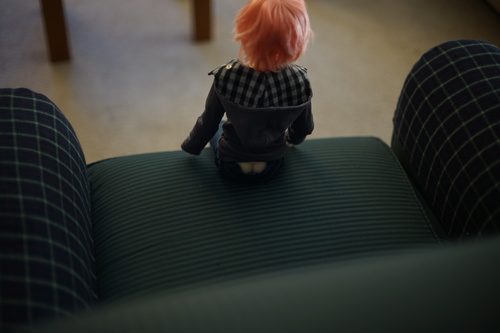

remember the doll rocking chair from blog 20?? i finally took it apart (it mostly just fell apart tbh) and picked off the glue, sanded the edges and used wood glue to put it back together!
hopefully it'll stay together now. they must not have wood glue in "taiwan"

i've been promising to make ryan arm covers for his little green armchair for like 2 years now and i finally did it today. I think they turned out okay and they do a good job of hiding the rips
also pictured: liam in a pink wig. pity him.
we stopped by the thrift store and walmart and ryan bought me some pokemon cards and we got spicy water. my only thrift store find was The Human League - Dare for $.99. i did not bring liam with me to the store, thanks for asking. i also had to master manual focus with my pinky
omake: full moon
